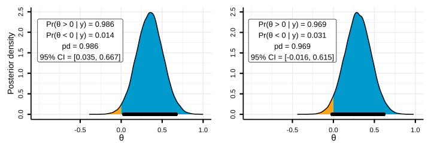
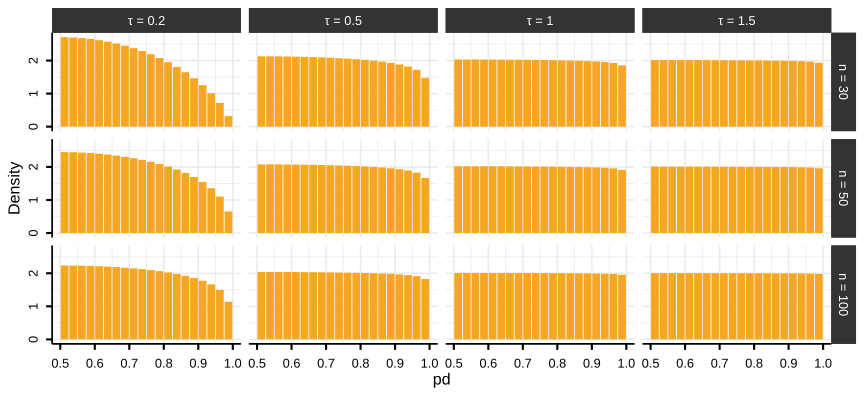
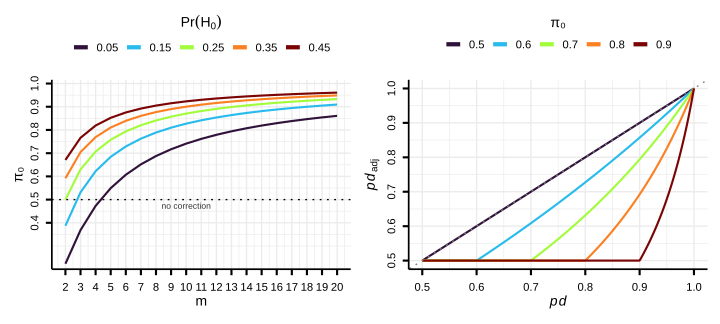
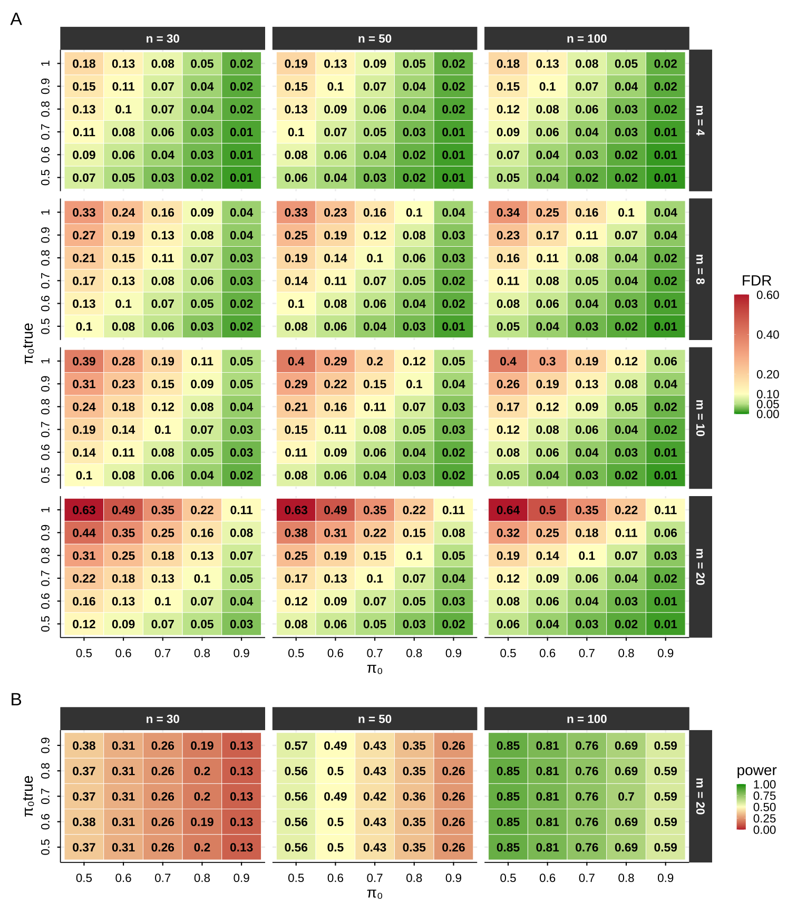
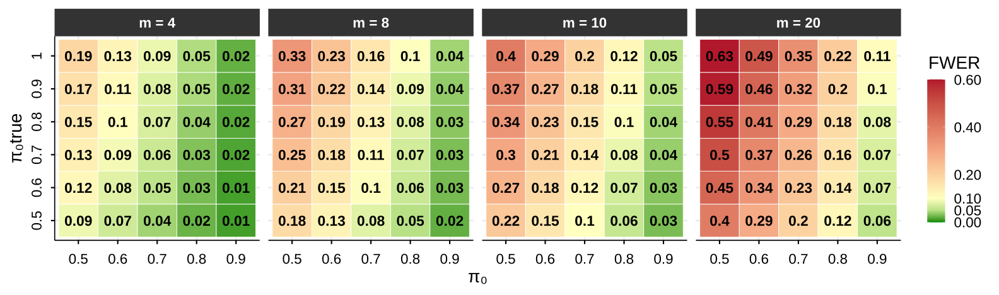
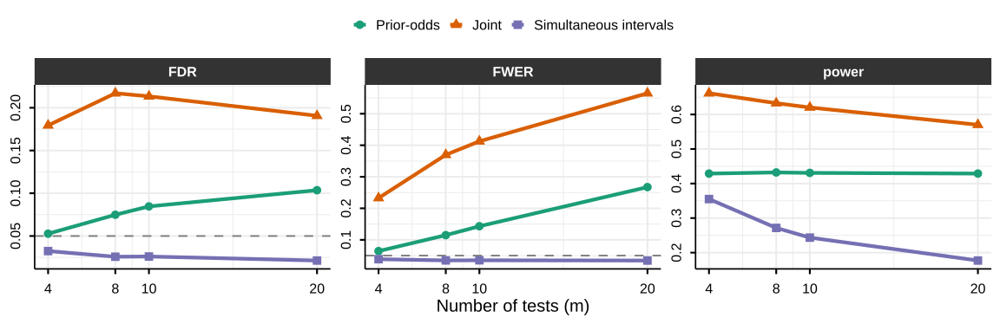

# install.packages('remotes')
remotes::install_github("mar-cald/multibayes")
library(multibayes)
library(brms)
library(dplyr)
data_stroop <- subset(afex::stroop, subset = study == 1 & pno %in% sample(levels(pno),
size = 80)) |>
# remove useless levels id
dplyr::mutate(id = droplevels(pno)) |>
# select relevant variables
dplyr::select(id, condition, congruency, trialnum, acc, rt) |>
# previous cong
group_by(id, condition) |>
mutate(prev_cong = lag(congruency), trial = scale(trialnum)[, 1]) |>
ungroup() |>
na.omit()A Prior-Odds Adjustment for the Probability of Direction in Multiple Testing
Margherita Calderan1,2, Filippo Gambarota1, Livio Finos3,4, and Gianmarco Altoè1
1Department of Developmental Psychology and Socialization, University of Padova
2Department of General Psychology, University of Padova
3Department of Statistical Sciences, University of Padova
4Padova Neuroscience Center, University of Padova
Margherita Calderan  https://orcid.org/0009-0005-5668-5162
https://orcid.org/0009-0005-5668-5162
Filippo Gambarota  https://orcid.org/0000-0002-6666-1747
https://orcid.org/0000-0002-6666-1747
Livio Finos  https://orcid.org/0000-0003-3181-8078
https://orcid.org/0000-0003-3181-8078
Gianmarco Altoè  https://orcid.org/0000-0003-1154-9528
https://orcid.org/0000-0003-1154-9528
Author roles were classified using the Contributor Role Taxonomy (CRediT; https://credit.niso.org/) as follows: Margherita Calderan: conceptualization, methodology, software, visualization, and writing – original draft. Filippo Gambarota: methodology, software, and writing – review & editing. Livio Finos: supervision, methodology, and writing – review & editing. Gianmarco Altoè: supervision, conceptualization, and writing – review & editing
Correspondence concerning this article should be addressed to Margherita Calderan, Department of Developmental Psychology and Socialization, University of Padova, Via Venezia 8, Padova 35131, Italy, Email: margherita.calderan@unipd.it
Abstract
The probability of direction (pd) has seen rapid adoption in psychological research as an intuitive posterior summary that quantifies how strongly the posterior distribution favors one direction of an effect over the other. In practice, researchers often turn pd into a binary decision rule by applying fixed thresholds (e.g., pd>0.975), declaring evidence for an effect when posterior mass concentrates strongly on one side. When this rule is applied across many parameters, it can substantially increase the risk of misleading conclusions. We argue that this problem stems from neglecting the prior probability that for every tested effect, the data-favored direction does not reflect a genuine effect. This quantity, often left implicit, becomes increasingly consequential as the number of tested effects grows. To address this, we propose a prior-odds adjustment to pd that requires researchers to explicitly specify the proportion of tested effects they expect to be null. The adjustment accounts for multiplicity without modifying the model used in parameter estimation, offers a transparent mechanism for incorporating prior skepticism about the existence of effects, and reduces the risk of false discoveries in multi-parameter settings. We evaluate its behavior through simulation across varying sample sizes and proportions of null effects, and provide an R package to facilitate applied use.
Keywords: probability of direction, multiple testing, prior-odds, FDR
A Prior-Odds Adjustment for the Probability of Direction in Multiple Testing
Introduction
Over the past two decades, the use of Bayesian methods in psychological research has grown considerably (Jevremov & Pajić, 2024; Pfadt et al., 2025; Van De Schoot et al., 2017). This expansion has, however, been accompanied by practices reminiscent of the “null ritual” in frequentist statistics, where widespread adoption gave way to automatic application rather than principled reasoning (Cohen, 1994; Gigerenzer, 2004). Researchers sometimes treat Bayes Factor thresholds (e.g., BF > 3) as dichotomous decision rules, or claim that an effect “exists” because the posterior probability of a directional effect exceeds a conventional benchmark such as 95% (Heck et al., 2023; Hoijtink et al., 2016; Kelter, 2023; Kruschke, 2018; Tendeiro et al., 2024; Tendeiro & Kiers, 2019). Such cutoffs are convenient, but they encourage all-or-none interpretations, and when these binary judgments are applied repeatedly across many parameters they generate a multiplicity problem no different in kind from the one long recognized in frequentist statistics.
Frequentists developed methods to address this problem, controlling either the Family-Wise Error Rate (FWER; the probability of at least one false positive) or the False Discovery Rate (FDR; the expected proportion of false positives among rejected hypotheses) (Benjamini & Hochberg, 1995; Westfall & Young, 1993). These procedures address whether a spurious result enters the literature, but leave unresolved a subtler consequence of the same selection process. When researchers examine many parameters but highlight only the most extreme estimates, selection systematically inflates reported magnitudes (Altoè et al., 2020; Gelman & Carlin, 2014; Zwet & Cator, 2021). Bayesian methods can mitigate this overestimation, pulling extreme estimates toward more plausible values through informative priors (Dawid, 1994; Zwet & Gelman, 2022) and hierarchical modeling (Berry & Hochberg, 1999; Gelman et al., 2012, 2013; Kruschke, 2011). Magnitude bias and false-positive accumulation are, however, distinct problems. Shrinkage offers no guarantee about the error properties of a decision rule applied across many parameters: if the same cutoff is used repeatedly (e.g., declaring an effect whenever a posterior probability exceeds 95%), the probability of spurious findings can remain substantial. Bayesian responses to this issue do exist, such as joint probability statements (Box & Tiao, 1992; Gelman & Tuerlinckx, 2000; Pruzek, 2016; Schnell et al., 2020) or priors over the hypothesis space that scale with the number of tests (Jeffreys, 1938; Scott & Berger, 2006; Scott & Berger, 2010; Westfall et al., 1997).
Here we focus on an increasingly adopted decision rule based on the probability of direction (pd) (Ben-Artzi et al., 2022; Bramley & Ruggeri, 2022; Brissenden et al., 2023, 2024; Ciranka et al., 2026; Hochman et al., 2025; Makowski et al., 2020; Schurr et al., 2024; Stone-Sabali et al., 2024). The pd quantifies the probability that an effect lies in its dominant direction (Makowski et al., 2019; Shi & Yin, 2021); researchers claim evidence for an effect when it exceeds a fixed threshold (e.g., pd>0.95, pd>0.975). We examine the frequentist operating characteristics1 of such a rule, and consider how the resulting multiplicity problem can be addressed. Following the second strategy noted above, we propose a prior-odds correction for pd grounded in the foundational work of Jeffreys (1938; see also Westfall et al., 1997) and more recent Bayesian approaches to FDR control (Abraham et al., 2022; Efron et al., 2001; Guo & Heitjan, 2010; Scott & Berger, 2006; Scott & Berger, 2010; Storey, 2002, 2003). The correction requires the researcher to specify the proportion of tested effects expected to be null.
It bears emphasis that the proposed adjustment does not control error rates per se; rather, it makes explicit the prior skepticism the researcher brings to the family of hypotheses, allowing the resulting posterior probability to reflect both the observed data and the researcher’s substantive beliefs about the prevalence of true effects. When those beliefs are well-calibrated to the data-generating process, error rates are naturally reduced as a consequence.
The paper proceeds as follows. We begin by introducing pd and examining its use as a test of an effect’s existence, then discuss how prior choice shapes its behavior and why more skeptical within-model priors alone cannot resolve the multiplicity problem. We then develop the prior-odds adjustment, evaluate its properties through simulation, and compare its performance with two others Bayesian multiple comparison procedures. A worked example using the accompanying R package (Calderan & Gambarota, 2026) follows, after which we conclude with a general discussion.
Probability of direction
The probability of direction (pd) is a posterior summary that quantifies how strongly the posterior distribution favors one direction of an effect relative to a reference (\theta_{null}) value (Makowski et al., 2019). For a continuous posterior, it can be defined as the larger of the two one-sided posterior probabilities: pd = \max(\Pr(\theta < \theta_{null} \mid y),\ \Pr(\theta > \theta_{null} \mid y)), and it ranges from 0.50 (no directional preference) to 1 (all on one side). The pd equals exactly the complement of the one-sided p-value when computed on the posterior of a location parameter in exponential-family models estimated under a uniform prior; under a broader class of priors, this correspondence holds approximately (Casella & Berger, 1987; Marsman & Wagenmakers, 2017; Shi & Yin, 2021).
In practice, the pd is often used to summarize both the direction and existence of an effect. This interpretation is clearest when phrased as a decision rule pd>c: the posterior must assign more than c probability mass to the side of \theta_{\text{null}} favored by the data. Setting c=1-\alpha/2 is convenient because it bounds the posterior mass in the opposite tail by \alpha/2. For concreteness, suppose the posterior favors a positive effect so that pd=\Pr(\theta>0\mid y). An \alpha=0.05 implies c=0.975, therefore the rule pd>c requires that \Pr(\theta\le 0 \mid y)<0.025, placing less than 2.5% of posterior mass at or below 0.
As Figure 1 illustrates, observing pd>0.975 is equivalent to excluding 0 from the central 95% equi-tailed credible interval. When the credible interval excludes the null value, one can infer that the null is relatively implausible (Box & Tiao, 1992). Given these considerations, although pd and the frequentist p-value target different quantities, it is expected that decision rules of the form pd>c approximate the operating characteristics of familiar frequentist rules such as p<\alpha.
Although we express the decision threshold as c = 1 - \alpha/2 (with \alpha = 0.05) and set \theta_{\text{null}} = 0 throughout for ease of exposition, neither choice is restrictive. The threshold c can be set to any posterior probability cutoff, and \theta_{\text{null}} can take any non-zero value, which is particularly relevant when hypotheses involve a minimum effect of practical interest (Lakens et al., 2018).
Multiplicity problem
Under the null hypothesis, p-values are uniformly distributed on [0, 1]. Because pd can be mapped to the p-value, this implies a corresponding null reference behavior for pd on [0.5, 1]. However, because pd is a posterior probability regarding the sign of \theta, its null distribution depends not only on the likelihood but also on how strongly the prior concentrates probability near 0, that is, on how strongly it “expects” near-null effects. To make this concrete, we use a conjugate normal–normal model: the observations are normal with known variance, y_i \mid \theta \sim \mathcal{N}(\theta, 1) (with true \theta = 0), and the effect carries a mean-zero normal prior, \theta \sim \mathcal{N}(0, \tau), where \tau denotes the prior standard deviation. This pairing yields a normal posterior in which the \tau governs the degree of skepticism.
Varying the sample size (n \in \{30, 50, 100\}) and \tau (0.2, 0.5, 1, 1.5) shows that the probability that pd exceeds 0.975 under the null is not constant (Figure 2). Under diffuse priors (\tau \geq 1) and/or sufficiently large samples, pd recovers the uniform null reference, with constant density on [0.5, 1]. A skeptical prior (e.g., \tau = 0.2), by contrast, induces shrinkage toward 0.5, effectively reducing the error rate.
While skeptical priors reduce the probability that a single test yields an extreme pd, they do not address the issue that, as the number of tests m increases, so does the probability of observing at least one extreme value among pd_1, \dots, pd_m. The approach presented below addresses this at the level of the testing procedure rather than the within-model prior, by placing a separate prior on the proportion of effects expected to be null. This lets researchers who use uninformative or weakly informative priors for estimation still incorporate substantive beliefs at the family level.
As we formalize in the next section, the correction operates on the Bayes Factor comparing one directional hypothesis against the other. For pd to enter this framework, it must coincide with that Bayes Factor, and this holds only under a specific condition. Because pd is the posterior probability mass on one side of \theta_{\text{null}}, it maps directly onto the posterior odds between the two directional hypotheses (\theta > \theta_{\text{null}} vs. \theta < \theta_{\text{null}}). These posterior odds equal the Bayes Factor only when the within-model prior is symmetric around \theta_{\text{null}}: symmetry makes the two directions equally plausible a priori, so the prior odds are unity and the posterior odds reduce to the ratio of marginal likelihoods. This requirement is typically satisfied by the default priors in standard Bayesian software, and it remains compatible with any degree of prior information about effect magnitude, which is expressed through \theta_{\text{null}}.
From posterior probabilities to posterior odds
To connect pd to posterior odds, consider the directional hypotheses H_{+}: \theta > 0 and H_{-}: \theta < 0. These hypotheses partition the parameter space based on the sign of \theta. If the prior for \theta is continuous and symmetric about 0, then the two directions are equally plausible a priori: \Pr(H_{+}) = \Pr(H_{-}) = 0.5. Without loss of generality, assume the posterior favors H_{+}, such that pd = \Pr(H_{+} \mid y) = \Pr(\theta > 0 \mid y). The complement is then given by 1 - pd = \Pr(\theta \le 0 \mid y). The posterior odds comparing these two hypotheses are therefore: \frac{pd}{1 - pd} = \frac{\Pr(H_{+} \mid y)}{\Pr(H_{-0} \mid y)}
For a continuous posterior distribution, the probability of any single value (e.g., \Pr(\theta = 0 \mid y)) is 0, which means that one could write \frac{pd}{1 - pd} = \frac{\Pr(H_{+} \mid y)}{\Pr(H_{-} \mid y)}. However, we retain the notation H_{-0} in the denominator to explicitly indicate that the hypothesis includes the point null value of zero. Applying Bayes’ rule, these posterior odds can be decomposed into a Bayes Factor and prior odds: \frac{\Pr(H_{+} \mid y)}{\Pr(H_{-0} \mid y)} = \text{BF}_{+/-0} \times \frac{\Pr(H_{+})}{\Pr(H_{-0})} where \text{BF}_{+/-0} quantifies the relative likelihood of the data under H_{+} versus H_{-0}. Under prior symmetry, \frac{\Pr(H_{+})}{\Pr(H_{-0})} = 1, which yields \frac{pd}{1 - pd} = \text{BF}_{+/-0} (Marsman & Wagenmakers, 2017). Thus, the odds \frac{pd}{1 - pd} computed from posterior draws can be interpreted directly as evidence favoring \theta > 0 over \theta \le 0 (or \theta < 0 over \theta \ge 0).
Multiplicity adjustment via prior odds
For each test i = 1, \dots, m, let H_{1,i} denote the directional claim corresponding to the posterior-dominant sign, used to compute pd_i = \Pr(H_{1,i} \mid y), with complement \Pr(H_{0,i} \mid y) = 1 - pd_i. If the m tests are exchangeable and \pi_0 = \Pr(H_{0,i}) denotes the prior probability that the data-disfavored hypothesis holds for a given test, then \pi_0 is the expected proportion of tests for which no genuine effect exists in the favored direction; accordingly, the expected number of such tests is m\pi_0.
If the tests are independent, the probability of the global null H_0, the event that no tested effect lies in its data-favored direction, is: \Pr(H_0) = \pi_0^m, \qquad \text{equivalently} \qquad \pi_0 = \Pr(H_0)^{1/m}. In this scenario, setting \pi_0 = \Pr(H_{1,i}) = \Pr(H_{0,i}) = 0.5 (the symmetric prior introduced in the previous section) assigns near-certainty to the event that at least one effect lies in its claimed direction, since \Pr(H_0) = 0.5^m tends to 0 as m grows. A principled response is to redistribute prior probability toward the data-disfavored hypothesis for each claim as a function of family size m (Jeffreys, 1938; Westfall et al., 1997). This adjustment enters through \pi_0, which modifies the prior odds. For each test, the adjusted posterior odds are: \frac{pd_{\mathrm{adj},i}}{1 - pd_{\mathrm{adj},i}} = \frac{pd_i}{1-pd_i} \times \frac{1 - \pi_0}{\pi_0}, and solving for the adjusted posterior probability gives: pd_{\mathrm{adj},i} = \frac{pd_i\,(1 - \pi_0)}{pd_i\,(1 - \pi_0) + (1 - pd_i)\,\pi_0}. Because the prior is symmetric and pd_i is always the posterior probability of the dominant direction, the factor (1-\pi_0)/\pi_0 acts as a single scalar penalty applied identically regardless of the effect’s sign.
We emphasize that H_{0,i} is a directional null, the disfavored region \theta_i \le \theta_{\text{null}} (taking the favored side as positive) covers both a truly (point) null effect and an effect of the opposite sign that the data have mis-signed. Additionally, \pi_0 is a family-level prior, distinct from the continuous within-model prior on each \theta_i, under which the point \theta_i = \theta_{\text{null}} has zero mass; the procedure accordingly does not quantify evidence for the point null at any individual test, it only adjusts the weight given to directional claims in light of the expected proportion of genuine discoveries in the family.
Researchers encode their expectations through \pi_0 or, equivalently under independence, through the global-null prior \Pr(H_0) = \pi_0^m: lower values are appropriate for well-established effects with substantial prior information, higher values for settings with greater uncertainty, as in exploratory research. For fixed \Pr(H_0), larger families imply higher \pi_0, then the correction acts nonlinearly on the posterior evidence, leaving larger pd_i values comparatively less affected (Figure 3).
A boundary condition arises when the specified \pi_0 falls below 0.5 (which, for a fixed global null, occurs when m is small and \Pr(H_0) is very low), inflating the posterior odds in favor of H_1 rather than penalizing them. We therefore cap \pi_0 at 0.5, ensuring the adjustment acts exclusively as a conservative safeguard; when no penalty is warranted, pd_{\mathrm{adj},i} = pd_i. Furthermore, since pd \in [0.5, 1], the adjusted probability of direction is also bounded below by 0.5.
Error rates under the prior-odds adjustment
For a family of m such tests, let R denote the total number of rejections and V the number of false rejections (rejected true nulls). The target error rate is the False Discovery Rate (FDR), \mathrm{FDR} = \mathbb{E}\!\left[\frac{V}{\max(R, 1)}\right], where the \max(R, 1) sets the ratio to zero when no hypothesis is rejected (Benjamini & Hochberg, 1995). The FDR factorizes as the product of the positive False Discovery Rate (pFDR, Storey, 2003) and the probability of at least one rejection, \mathrm{FDR} = \mathrm{pFDR} \times \Pr(R > 0). For a single test with prior null probability \pi_0, \mathrm{pFDR} = \frac{\pi_0\,\alpha}{\pi_0\,\alpha + (1 - \pi_0)(1 - \beta)}, where \alpha is the per-test Type I error rate and 1 - \beta the power (Berger, 2023; Storey, 2003). The proposed correction fixes \pi_0 at the researcher’s prior and, as we now show, implicitly reduces \alpha by tightening the decision threshold. Writing the adjusted rule pd_{\mathrm{adj},i} > c in odds form and substituting the adjusted odds, \frac{pd_{\mathrm{adj},i}}{1 - pd_{\mathrm{adj},i}} = \frac{pd_i}{1 - pd_i} \times \frac{1 - \pi_0}{\pi_0}, the rule becomes a condition on the unadjusted odds, \frac{pd_i}{1 - pd_i} > \frac{c}{1 - c} \times \frac{\pi_0}{1 - \pi_0}, or, on the probability scale, a stricter threshold on the raw pd_i: pd_i > c^*, \qquad c^* = \frac{c\,\pi_0}{(1 - c)(1 - \pi_0) + c\,\pi_0}, with c^* > c whenever \pi_0 > 0.5. Since c^* is increasing in \pi_0, the decision threshold is tied directly to the prior probability of the null. The more plausible the null is held to be a priori, the stronger the posterior evidence required to claim a directional effect (Benjamin et al., 2017). When the null distribution of pd is uniform on [0.5, 1], the per-test probability of rejecting a true null is \alpha^* = 2(1 - c^*); under an informative skeptical prior, which shrinks the posterior toward the null, this rate is even smaller. Since \alpha^* < \alpha, the adjustment lowers both factors of the decomposition, the pFDR, in which \alpha enters directly, and \Pr(R > 0), which falls as the test becomes more conservative, and therefore reduces the FDR relative to the unadjusted rule.
Simulation Study
We conducted a fully crossed simulation study, with 10,000 replications per cell, to examine the adjustment under both correctly specified and misspecified priors (\pi_0). We varied the per-test null prior supplied to the procedure, \pi_0 \in \{0.50, 0.6, \dots, 0.9\}; the true probability that each hypothesis is null, \pi_{0\text{true}} \in \{0.5, 0.6, \dots, 1.0\}; the family size m \in \{4, 8, 10, 20\}; and the sample size n \in \{30, 50, 100\}. At each replication the number of true null effects (\theta_i = 0) was drawn from \mathrm{Binomial}(m, \pi_{0\text{true}}) and the remaining effects set to \theta_i = 0.3; observations were generated as y_i \sim \mathcal{N}(\theta_i, 1), and the posterior obtained from a conjugate normal–normal model with y_i \mid \theta \sim \mathcal{N}(\theta, 1) and prior \theta \sim \mathcal{N}(0, 2). We declared support for a directional effect when pd > 0.975 and evaluated the FDR, the FWER, and average power, the proportion of true effects detected (Benjamini & Hochberg, 1995; Izmirlian et al., 2025). The diagonal \pi_0 = \pi_{0\text{true}} corresponds to a correctly specified prior.
Figure 4 shows the FDR resulting from our procedure across the grid. The column \pi_0 = 0.5 is the unadjusted rule: there the prior odds are one, no correction is applied (pd_{\mathrm{adj}} = pd), and the FDR inflates with the family size m and the true null proportion \pi_{0\text{true}}, reaching 0.64 when the family is large and most effects are null. Increasing \pi_0 brings the FDR under control: it is held low whenever the specified \pi_0 is at least the true proportion, and inflates only under substantial underestimation, when a small \pi_0 is paired with a large \pi_{0\text{true}} at large m. This control trades off power, which decreases as \pi_0 increases; because average power does not vary with m (for fixed \pi_{0\text{true}} and \pi_0), we display m = 20 as a representative condition (Figure 4).
Figure 5 shows the FWER of the same rule (for n = 50, as a representative case). Unlike the FDR, the FWER is not held low by the per-test adjustment: it grows with the family size m, reaching 0.64 for the unadjusted rule with a large family of mostly null effects. Increasing \pi_0 lowers it substantially, at \pi_0 = 0.9 it stays at or below about 0.10.
Comparison with other Bayesian methods
We compare the proposed method with two Bayesian alternatives that differ both in the form of the claim they license and in the error they aim to control. The first, hereafter the joint directional rule, orders the directional claims by their posterior probability and accepts the largest set whose joint posterior probability is at least 1-\alpha (Gelman & Tuerlinckx, 2000; Pruzek, 2016). Its output is a single one-sided statement about signs, that is “all accepted effects lie in their claimed direction”, and the quantity it bounds is the familywise probability of a sign (Type S) error. The second, hereafter the simultaneous-band rule, computes credible intervals with 1-\alpha joint coverage, meaning that with probability 1-\alpha every interval contains its parameter, and declares an effect whenever an interval excludes the null value (Box & Tiao, 1992; Schnell et al., 2016; Schnell et al., 2020). Since an interval that covers a truly null parameter cannot exclude it, the probability of any false declaration is at most \alpha. Both procedures act on the posterior alone, whereas the proposed method combines the posterior with the prior odds, adjusted for the family of hypotheses under test.
To benchmark the three procedures, we replicate the simulation described above, holding n = 50 and \pi_{0\text{true}} = 0.7 fixed while varying the family size m. The prior-odds adjustment is evaluated at \pi_0 = \pi_{0\text{true}}, its best-case calibration. All procedures use \alpha = 0.05: the prior-odds rule claims a directional effect when the adjusted pd exceeds c = 1 - \alpha/2 = 0.975, the joint directional rule accepts directional claims as long as their joint posterior probability remains at least 1 - \alpha = 0.95, and the simultaneous-band rule declares an effect when the 95\% joint-coverage band excludes zero. Figure 6 reports the resulting FDR, FWER, and power for each procedure across values of m.
In this setting, the simultaneous-band rule is the most stringent: it keeps the FWER, and hence the FDR, below the nominal level at every m, since only a proportion \pi_{0\text{true}} = 0.7 of the effects are truly null. The joint directional rule is the most liberal, with the FDR reaching 0.22 and the FWER rising to 0.57 at the largest family size.
The error criteria trade off power (rightmost panel of Figure 6): the joint directional rule detects the most true effects (around 0.62), the prior-odds rule maintains nearly constant power across m (around 0.43), and the simultaneous-band rule loses power as the family grows (from 0.36 at m = 4 to 0.18 at m = 20). Choosing among the procedures is therefore a deliberate trade between power and the error one most wants to limit.
Application: worked example with the R Package multibayes
The procedure is implemented in the multibayes R package, which provides functions for computing adjusted pd values from either raw posterior draws or a vector of unadjusted pd values. The core function, pd.adjust(), accepts posterior draws directly and computes pd values internally when needed. The prior is supplied in either of two ways: directly as the per-test null prior \pi_0, or as the global-null prior \Pr(H_0), from which \pi_0 = \Pr(H_0)^{1/m} is recovered under independence. The output includes the adjusted pd values, the tested null value, the per-test null probability \pi_0, and the number of tests m. Unadjusted pd values are retained alongside adjusted ones to facilitate direct comparison; when posterior draws are provided as input, the posterior median for each parameter is also returned. pd.adjust() returns the per-test correction, and order = TRUE sorts the hypotheses by strength of evidence. The decision threshold may be given either as a pd cutoff c (argument threshold, default 0.975) or, equivalently, as a nominal per-test rate (argument alpha, with c = 1 - \alpha/2); in either case the function reports the implied adjusted cutoff c^* on the raw pd, which summarizes what the chosen \pi_0 implies.
For this example, we use the openly available dataset from Lin et al. (2020), who investigated the effect of ego depletion on conflict resolution across four studies. In their paradigm, an initial high-demand (vs. low-demand) task was followed by a Stroop task. For simplicity, we focus on Study 1, which tested the effects of congruency and ego depletion (within subjects). The dataset is readily accessible via the afex package (Singmann et al., 2016) and was chosen for this reason; this example is not intended as a critique of the original work. This dataset includes data from 253 participants; for this example, we randomly selected 80 participants.
Given the repeated-measures structure of the data and the large number of trials per participant, we fit a multilevel generalized linear model using brms (Bürkner, 2017) on reaction time (RT) data. A Lognormal model was specified, with default flat priors; these were adopted not as a principled recommendation, but to illustrate the method’s behavior under the most common applied scenario, which also represents the condition where the prior-odds adjustment is most suggested.
The model includes the effect of congruency (congruent vs. incongruent), previous congruency (congruent vs. incongruent), condition (depletion vs. control), and trial number (scaled within participant and condition). The sequential congruency effect was modeled as the interaction between congruency and previous congruency; the hypothesis that depletion amplifies the congruency effect over time was captured by the three-way congruency \times condition \times trial interaction. This yielded nine hypotheses (Table 1).
Although the theoretical hypotheses are directional (e.g., incongruent trials are expected to slow responses), pd is computed uniformly as \max\!\big(\Pr(\hat{\theta} > \theta_\text{null}),\, \Pr(\hat{\theta} < \theta_\text{null})\big) for all hypotheses.
| Hypothesis | \theta_\text{null} |
|---|---|
| H_1: congruency effect | 0 |
| H_2: previous congruency effect | 0 |
| H_3: condition effect | 0 |
| H_4: trial number effect | 0 |
| H_5: congruency \times previous congruency interaction | 0 |
| H_6: congruency \times condition interaction | 0 |
| H_7: congruency \times trial interaction | 0 |
| H_8: trial \times condition interaction | 0 |
| H_9: congruency \times condition \times trial interaction | 0 |
We retained only correct trials preceded by a correct trial (i.e., error and post-error trials were excluded), yielding 5,965 observations.
data_rt <- data_stroop |>
group_by(id) |>
filter(acc == 1 & lag(acc) == 1) |>
ungroup()
# set contrast
contrasts(data_rt$congruency) <- contr.sum(2)/2
contrasts(data_rt$prev_cong) <- contr.sum(2)/2
contrasts(data_rt$condition) <- contr.sum(2)/2
mod_rt <- brm(formula = rt ~ 1 + congruency * prev_cong + congruency *
trial * condition + (1 + congruency + prev_cong + trial + condition ||
id), family = lognormal(), data = data_rt, cores = 3, chains = 3, iter = 8000)Since pd.adjust() computes pd values automatically from a matrix of posterior draws, we extracted the relevant draws from the model.
draws_rt <- as.data.frame(mod_rt)
par_names <- colnames(draws_rt)[2:10]
draws_rt <- draws_rt[, par_names]
pd.adjust(draws = draws_rt, pi0 = 0.7, null.value = 0)Prior-odds adjusted probability of direction
Tests: 9 | pi0 = 0.7
Decision: raw pd > 0.9891 (adjusted from 0.975); effective per-test
alpha 0.0217 (from 0.05)
median.est null.value pd pd.adj
b_congruency1 -0.1439 0 1.0000 1.0000
b_prev_cong1 -0.0166 0 0.9803 0.9553
b_trial 0.0119 0 0.9369 0.8642
b_condition1 0.0063 0 0.6509 0.5000
b_congruency1:prev_cong1 0.0223 0 0.9583 0.9079
b_congruency1:trial -0.0033 0 0.7206 0.5250
b_congruency1:condition1 -0.0166 0 0.9291 0.8488
b_trial:condition1 0.0071 0 0.8936 0.7825
b_congruency1:trial:condition1 -0.0028 0 0.5961 0.5000
direction
b_congruency1 two.sided
b_prev_cong1 two.sided
b_trial two.sided
b_condition1 two.sided
b_congruency1:prev_cong1 two.sided
b_congruency1:trial two.sided
b_congruency1:condition1 two.sided
b_trial:condition1 two.sided
b_congruency1:trial:condition1 two.sidedThe function was called with a per-test null prior of \pi_0 = 0.7 (shown in the printed header), encoding the skeptical expectation that roughly 70% of the tested effects are null. The header also reports the equivalent decision this implies: at the default cutoff c = 0.975, a raw pd must now exceed the stricter adjusted threshold c^* = 0.989.
The adjustment’s effect varies with the strength of the underlying evidence. The predictor b_congruency1 carries pd = 1 and is left untouched (pd_\text{adj} = 1). Terms with lower but still substantial evidence are pulled down only mildly: b_prev_cong1 (0.980 \to 0.955), b_trial (0.937 \to 0.864), b_congruency1:prev_cong1 (0.958 \to 0.908), b_congruency1:condition1 (0.929 \to 0.849), and b_trial:condition1 (0.894 \to 0.783). In contrast, parameters with weak evidence are shrunk substantially toward 0.5: b_condition1 (0.651 \to 0.500), b_congruency1:trial (0.721 \to 0.525), and the three-way interaction b_congruency1:trial:condition1 (0.596 \to 0.500).
A companion function, joint(), computes by default the joint posterior probability of the k strongest directional claims, for each k:
joint(draws_rt, null.value = 0) median.est null.value pd direction
b_congruency1 -0.1439 0 1.0000 two.sided
b_prev_cong1 -0.0166 0 0.9803 two.sided
b_congruency1:prev_cong1 0.0223 0 0.9583 two.sided
b_trial 0.0119 0 0.9369 two.sided
b_congruency1:condition1 -0.0166 0 0.9291 two.sided
b_trial:condition1 0.0071 0 0.8936 two.sided
b_congruency1:trial -0.0033 0 0.7206 two.sided
b_condition1 0.0063 0 0.6509 two.sided
b_congruency1:trial:condition1 -0.0028 0 0.5961 two.sided
joint_cum
b_congruency1 1.0000
b_prev_cong1 0.9803
b_congruency1:prev_cong1 0.9412
b_trial 0.8812
b_congruency1:condition1 0.8191
b_trial:condition1 0.7340
b_congruency1:trial 0.5366
b_condition1 0.3532
b_congruency1:trial:condition1 0.2232The rows are sorted by decreasing pd, and the joint_cum column reports the posterior probability that the top k claims hold simultaneously; a high value supports accepting that set of claims as a whole. Here the two strongest claims hold jointly with probability 0.98 and the three strongest with 0.94; the joint probability then declines as weaker claims are added, indicating how many of the leading effects can be reported as a jointly supported set.
Setting interval = TRUE returns simultaneous equi-tailed credible intervals instead:
joint(draws_rt, interval = TRUE) lower est upper
b_congruency1 -0.191547431 -0.143902841 -0.097013276
b_prev_cong1 -0.040931203 -0.016649556 0.006550712
b_trial -0.010103453 0.011930699 0.034360234
b_condition1 -0.041911018 0.006263499 0.055382483
b_congruency1:prev_cong1 -0.012481840 0.022342004 0.056749925
b_congruency1:trial -0.019082492 -0.003316115 0.012417422
b_congruency1:condition1 -0.048854131 -0.016551526 0.015382114
b_trial:condition1 -0.008945797 0.007125574 0.023144055
b_congruency1:trial:condition1 -0.034805697 -0.002829134 0.028034847
prob
b_congruency1 0.95
b_prev_cong1 0.95
b_trial 0.95
b_condition1 0.95
b_congruency1:prev_cong1 0.95
b_congruency1:trial 0.95
b_congruency1:condition1 0.95
b_trial:condition1 0.95
b_congruency1:trial:condition1 0.95Under this stricter criterion, only b_congruency1 excludes zero (simultaneous band [-0.19, -0.10]).
Discussion
The probability of direction (pd) is the posterior mass on the data-favored side of a reference null value, equivalently, the larger of the two one-sided posterior probabilities. Under within-model prior symmetry each such data-selected hypothesis is evaluated under prior odds of one, so that the procedure attributes equal a priori plausibility to the direction selected after inspection of the data. In this scenario, if multiple hypothesis are tested, the procedure becomes a priori almost certain that at least one favored direction is genuine. The approach developed here addresses this by recasting multiplicity as a problem of prior specification: building on the foundational work of Jeffreys (1938; see also Westfall et al., 1997) and Bayesian approaches to FDR control (Abraham et al., 2022; Efron et al., 2001; Guo & Heitjan, 2010; Scott & Berger, 2006; Scott & Berger, 2010; Stephens, 2017; Storey, 2002, 2003), the correction requires researchers to specify the prior proportion of effects expected to be null. Making this prior explicit serves two purposes. For researchers using diffuse within-model priors, it provides a principled way to encode skepticism at the family level without committing to informative priors on individual parameters. For researchers who judge the implicit prior appropriate and decline the adjustment, it nonetheless renders that commitment transparent.
Related corrections have been implemented for specific testing contexts, such as post-hoc tests in JASP (Jong, 2019; van den Bergh et al., 2020). The present procedure extends this logic to pd and provides a general-purpose implementation for applied use, applicable to directly to posterior draws or any posterior-derived pd, including cases where pd values arise from multiple separate analyses within the same manuscript (Blondé et al., 2021; Ciranka et al., 2026). This raises the question of how to define the hypothesis family to which the correction applies (Hochberg & Tamhane, 1987; Shaffer, 1995). Although no universal consensus exists regarding what constitutes a family, we favor the criteria proposed by Westfall et al. (2011), where a family is a set of questions that “form a natural and coherent unit, [are] considered simultaneously in the decision-making process, and/or present a set over which one plays pick-the-winner”. Regardless of the chosen definition, authors should clearly specify their chosen family and explain how it serves the study’s substantive goals.
We further recommend that researchers justify their choice of \pi_0, the prior proportion of effects expected to be null, by drawing on theory, expert elicitation, or domain expertise (O’Hagan, 2019). More generally, a high prior probability suits exploratory settings with many uncertain hypotheses, while a lower value is warranted in confirmatory settings. For applied reporting, the unadjusted pd should accompany one multiplicity-adjusted measure, with the number of tests and \pi_0 clearly stated.
Although our approach derives from the Bayesian FDR literature, it differs from it in a fundamental respect. There, \pi_0 itself carries a prior distribution and is typically estimated from the data; here, it is specified by the user. The good frequentist properties of our procedure therefore hold only when the user-specified \pi_0 is approximately correct. A researcher may instead deliberately adopt a more skeptical prior, tightening control of Type I error at the cost of higher Type II error; the optimal value depends on the relative costs of the two.
Two limitations of the present framework warrant attention. First, the procedure assumes that all hypotheses are exchangeable. Exchangeability means each hypothesis receives the same prior penalty, even when some effects are regarded as more plausible a priori than others. Because the penalty shrinks weak evidence far more than strong evidence, genuine effects with strong support still survive; the price of a uniform proportion is therefore a modest loss of power on hypotheses one believes more likely to be true, rather than a loss of error control, which is preserved as long as the specified proportion is reasonable. Accommodating differential prior plausibility would require specifying and calibrating a separate \pi_0 for each test, with the realized error rate then governed by every individual value.
Second, it does not provide evidence for a point null hypothesis. The procedure evaluates directional claims defined by inequalities (e.g., \theta > \theta_{\text{null}} vs. \theta \leq \theta_{\text{null}}), and while the complementary hypothesis includes the null value, that value receives no special status; non-rejection therefore reflects the absence of a directional discovery, not evidence in favor of \theta = \theta_{\text{null}}. It bears noting, however, that the prior-odds correction itself is not new, it applies a classical multiplicity strategy (Jeffreys, 1938; Jong, 2019; Westfall et al., 1997) to the probability of direction, and, because it acts on the prior odds alone, it extends in principle to other Bayes factor approaches (Dienes, 2016; Heck et al., 2023; Ly et al., 2016; Morey & Rouder, 2011). When joint modeling is feasible, an alternative is to integrate evidence across hypotheses through joint posterior probabilities (Box & Tiao, 1992; Gelman & Tuerlinckx, 2000; Pruzek, 2016; Schnell et al., 2020).
As Bayesian methods become increasingly common in psychological research, often in pragmatic workflows relying on default priors and fixed decision thresholds, the implications of multiplicity should be explicitly recognized. Additionally, although priors may be well-calibrated at the level of individual parameters, they do not by themselves account for multiplicity when many parameters are considered simultaneously. Ignoring this aspect leads fixed pd thresholds to systematically overstate evidence for directional effects, especially as the number of tests grows. The adjustment proposed here addresses this gap by incorporating prior beliefs about the prevalence of null effects directly into pd-based decisions. By doing so, it provides a principled and transparent way to account for multiplicity without altering the estimation model, yielding more reliable inferences in multi-parameter settings and reducing the risk that apparent effects reflect chance rather than substantive signals.
Conflicts of Interest
The authors declare that there were no conflicts of interest with respect to the authorship or the publication of this article.
Acknowledgments
We are grateful to Jelle Goeman, Giovanni Parmigiani and Enrico Toffalini for insightful comments and discussion throughout the development of this work. We also thank Laura Sità and Matteo Manente for helpful feedback on earlier versions of the manuscript. The multibayes package code was reviewed and debugged with the assistance of AI tools.
Prior Versions
A version of this manuscript is posted as a preprint on PsyArXiv at https://osf.io/preprints/psyarxiv/8zwx2_v2. The submitted manuscript shares its full content with that preprint.
Open Materials
Code is openly available in the multibayes repository on GitHub at https://github.com/mar-cald/multibayes, and in the OSF repository at https://osf.io/q294m.
References
Abraham, K., Castillo, I., & Roquain, É. (2022). Empirical bayes cumulative l-value multiple testing procedure for sparse sequences. Electronic Journal of Statistics, 16(1), 2033–2081. https://doi.org/10.1214/22-EJS1979
Altoè, G., Bertoldo, G., Zandonella Callegher, C., Toffalini, E., Calcagnì, A., Finos, L., & Pastore, M. (2020). Enhancing statistical inference in psychological research via prospective and retrospective design analysis. Frontiers in Psychology, Volume 10 - 2019. https://doi.org/10.3389/fpsyg.2019.02893
Ben-Artzi, I., Luria, R., & Shahar, N. (2022). Working memory capacity estimates moderate value learning for outcome-irrelevant features. Scientific Reports, 12(1), 19677. https://doi.org/10.1038/s41598-022-21832-x
Benjamin, D. J., Berger, J. O., Johannesson, M., Nosek, B. A., Wagenmakers, E.-J., Berk, R., Bollen, K. A., Brembs, B., Brown, L., Camerer, C., Cesarini, D., Chambers, C. D., Clyde, M., Cook, T. D., De Boeck, P., Dienes, Z., Dreber, A., Easwaran, K., Efferson, C., … Johnson, V. E. (2017). Redefine statistical significance. Nature Human Behaviour, 2(1), 6–10. https://doi.org/10.1038/s41562-017-0189-z
Benjamini, Y., & Hochberg, Y. (1995). Controlling the False Discovery Rate: A Practical and Powerful Approach to Multiple Testing. Journal of the Royal Statistical Society Series B: Statistical Methodology, 57(1), 289–300. https://doi.org/10.1111/j.2517-6161.1995.tb02031.x
Berger, J. O. (2023). Four types of frequentism and their interplay with bayesianism. The New England Journal of Statistics in Data Science, 1, 126–137. https://doi.org/10.51387/22-NEJSDS4
Berry, D. A., & Hochberg, Y. (1999). Bayesian perspectives on multiple comparisons. Journal of Statistical Planning and Inference, 82(1), 215–227. https://doi.org/10.1016/S0378-3758(99)00044-0
Blondé, P., Makowski, D., Sperduti, M., & Piolino, P. (2021). In Medio Stat Virtus: Intermediate levels of mind wandering improve episodic memory encoding in a virtual environment. Psychological Research, 85(4), 1613–1625. https://doi.org/10.1007/s00426-020-01358-5
Box, G. E. P., & Tiao, G. C. (1992). Bayesian inference in statistical analysis (1st ed.). Wiley. https://doi.org/10.1002/9781118033197
Bramley, N. R., & Ruggeri, A. (2022). Children’s active physical learning is as effective and goal-targeted as adults’. Developmental Psychology, 58(12), 2310–2321. https://doi.org/10.1037/dev0001435
Brissenden, J. A., Adkins, T. J., Hsu, Y. T., & Lee, T. G. (2023). Reward influences the allocation but not the availability of resources in visual working memory. Journal of Experimental Psychology: General, 152(7), 1825–1839. https://doi.org/10.1037/xge0001370
Brissenden, J. A., Scerbak, T., Albin, R. L., & Lee, T. G. (2024). Motivational vigor in parkinson’s disease requires the short and long duration response to levodopa. Movement Disorders, 39(1), 76–84. https://doi.org/https://doi.org/10.1002/mds.29659
Bürkner, P.-C. (2017). brms: An R package for Bayesian multilevel models using Stan. Journal of Statistical Software, 80(1), 1–28. https://doi.org/10.18637/jss.v080.i01
Calderan, M., & Gambarota, F. (2026). Multibayes: Bayesian multiplicity adjustments. https://github.com/mar-cald/multibayes
Casella, G., & Berger, R. L. (1987). Reconciling bayesian and frequentist evidence in the one-sided testing problem. Journal of the American Statistical Association, 82(397), 106–111. https://doi.org/10.1080/01621459.1987.10478396
Ciranka, S., Chevallier, C., & Nettle, D. (2026). Low socioeconomic status amplifies the perceived rarity of large rewards. Cognition, 270, 106409. https://doi.org/https://doi.org/10.1016/j.cognition.2025.106409
Cohen, J. (1994). The earth is round (p < .05). American Psychologist, 49(12), 997–1003. https://doi.org/10.1037/0003-066X.49.12.997
Dawid, A. P. (1994). Selection paradoxes of bayesian inference. Lecture Notes-Monograph Series, 24, 211–220.
Dienes, Z. (2016). How bayes factors change scientific practice. Journal of Mathematical Psychology, 72, 78–89. https://doi.org/10.1016/j.jmp.2015.10.003
Efron, B., Tibshirani, R., Storey, J. D., & Tusher, V. (2001). Empirical bayes analysis of a microarray experiment. Journal of the American Statistical Association, 96(456), 1151–1160. https://doi.org/10.1198/016214501753382129
Gelman, A., & Carlin, J. (2014). Beyond power calculations: Assessing type s (sign) and type m (magnitude) errors. Perspectives on Psychological Science, 9(6), 641–651. https://doi.org/10.1177/1745691614551642
Gelman, A., Carlin, J. B., Stern, H. S., Dunson, D. B., Vehtari, A., & Rubin, D. B. (2013). Bayesian data analysis (3rd ed.). Chapman; Hall/CRC. https://doi.org/10.1201/b16018
Gelman, A., Hill, J., & Yajima, M. (2012). Why we (usually) don’t have to worry about multiple comparisons. Journal of Research on Educational Effectiveness, 5(2), 189–211. https://doi.org/10.1080/19345747.2011.618213
Gelman, A., & Tuerlinckx, F. (2000). Type s error rates for classical and bayesian single and multiple comparison procedures. Computational Statistics, 15(3), 373–390. https://doi.org/10.1007/s001800000040
Gigerenzer, G. (2004). Mindless statistics. The Journal of Socio-Economics, 33(5), 587–606. https://doi.org/10.1016/j.socec.2004.09.033
Guo, M., & Heitjan, D. F. (2010). Multiplicity-calibrated bayesian hypothesis tests. Biostatistics, 11(3), 473–483. https://doi.org/10.1093/biostatistics/kxq012
Heck, D. W., Boehm, U., Böing-Messing, F., Bürkner, P.-C., Derks, K., Dienes, Z., Fu, Q., Gu, X., Karimova, D., Kiers, H. A., et al. (2023). A review of applications of the bayes factor in psychological research. Psychological Methods, 28(3), 558. https://doi.org/10.1037/met0000454
Hochberg, Y., & Tamhane, A. C. (1987). Multiple Comparison Procedures (1st ed.). Wiley. https://doi.org/10.1002/9780470316672
Hochman, S., Havedanloo, R., Heysieattalab, S., & Soltanlou, M. (2025). How does language modulate the association between number and space? A registered report of a cross-cultural study of the spatial–numerical association of response codes effect. Journal of Experimental Psychology: General, 154(2), 305–324. https://doi.org/10.1037/xge0001653
Hoijtink, H., Kooten, P. van, & Hulsker, K. (2016). Why bayesian psychologists should change the way they use the bayes factor. Multivariate Behavioral Research, 51(1), 2–10. https://doi.org/10.1080/00273171.2014.969364
Izmirlian, G., Sirota, L. A., Berger, V. W., & Kipnis, V. (2025). The fundamentals of multiplicity adjustment in biostatistics. JNCI Monographs, 2025(68), 10–13. https://doi.org/10.1093/jncimonographs/lgae050
Jeffreys, H. (1938). Significance tests when several degrees of freedom arise simultaneously. Proceedings of the Royal Society of London. Series A. Mathematical and Physical Sciences, 165(921), 161–198. https://doi.org/10.1098/rspa.1938.0052
Jevremov, T., & Pajić, D. (2024). Bayesian method in psychology: A bibliometric analysis. Current Psychology, 43(10), 8644–8654. https://doi.org/10.1007/s12144-023-05003-3
Jong, T. de. (2019). A bayesian approach to the correction for multiplicity. PsyArXiv preprint. https://doi.org/10.31234/osf.io/s56mk
Kelter, R. (2023). How to choose between different bayesian posterior indices for hypothesis testing in practice. Multivariate Behavioral Research, 58(1), 160–188. https://doi.org/10.1080/00273171.2021.1967716
Kruschke, J. K. (2011). Bayesian assessment of null values via parameter estimation and model comparison. Perspectives on Psychological Science, 6(3), 299–312. https://doi.org/10.1177/1745691611406925
Kruschke, J. K. (2018). Rejecting or Accepting Parameter Values in Bayesian Estimation. Advances in Methods and Practices in Psychological Science, 1(2), 270–280. https://doi.org/10.1177/2515245918771304
Lakens, D., Scheel, A. M., & Isager, P. M. (2018). Equivalence testing for psychological research: A tutorial. Advances in Methods and Practices in Psychological Science, 1(2), 259–269. https://doi.org/10.1177/2515245918770963
Lin, H., Saunders, B., Friese, M., Evans, N. J., & Inzlicht, M. (2020). Strong effort manipulations reduce response caution: A preregistered reinvention of the ego-depletion paradigm. Psychological Science, 31(5), 531–547. https://doi.org/10.1177/0956797620904990
Ly, A., Verhagen, J., & Wagenmakers, E.-J. (2016). Harold jeffreys’s default bayes factor hypothesis tests: Explanation, extension, and application in psychology. Journal of Mathematical Psychology, 72, 19–32. https://doi.org/10.1016/j.jmp.2015.06.004
Makowski, D., Ben-Shachar, M. S., Chen, S. H. A., & Lüdecke, D. (2019). Indices of effect existence and significance in the bayesian framework. Frontiers in Psychology, Volume 10 - 2019. https://doi.org/10.3389/fpsyg.2019.02767
Makowski, D., Sperduti, M., Blondé, P., Nicolas, S., & Piolino, P. (2020). The heart of cognitive control: Cardiac phase modulates processing speed and inhibition. Psychophysiology, 57(3), e13490. https://doi.org/10.1111/psyp.13490
Marsman, M., & Wagenmakers, E.-J. (2017). Three insights from a bayesian interpretation of the one-sided p value. Educational and Psychological Measurement, 77(3), 529–539. https://doi.org/10.1177/0013164416669201
Morey, R. D., & Rouder, J. N. (2011). Bayes factor approaches for testing interval null hypotheses. Psychological Methods, 16(4), 406–419. https://doi.org/10.1037/a0024377
Müller, P., Parmigiani, G., Robert, C., & Rousseau, J. (2004). Optimal sample size for multiple testing. Journal of the American Statistical Association, 99(468), 990–1001. https://doi.org/10.1198/016214504000001646
O’Hagan, A. (2019). Expert knowledge elicitation: Subjective but scientific. The American Statistician, 73(sup1), 69–81. https://doi.org/10.1080/00031305.2018.1518265
Pfadt, J. M., Bartoš, F., Godmann, H. R., Waaijers, M., Groot, L., Heo, I., et al. (2025, October 30). A methodological metamorphosis: The rapid rise of bayesian inference and open science practices in psychology. OSF Preprints. https://doi.org/10.31234/osf.io/ck3js_v1
Pruzek, R. M. (2016). An introduction to bayesian inference and its applications (pp. 305–334). Routledge.
Rubin, D. B. (1984). Bayesianly justifiable and relevant frequency calculations for the applied statistician. The Annals of Statistics, 12(4), 1151–1172. https://doi.org/10.1214/aos/1176346785
Schnell, P. M., Fiecas, M., & Carlin, B. P. (2020). credsubs : Multiplicity-adjusted subset identification. Journal of Statistical Software, 94(7). https://doi.org/10.18637/jss.v094.i07
Schnell, P. M., Tang, Q., Offen, W. W., & Carlin, B. P. (2016). A Bayesian Credible Subgroups Approach to Identifying Patient Subgroups with Positive Treatment Effects. Biometrics, 72(4), 1026–1036. https://doi.org/10.1111/biom.12522
Schurr, R., Reznik, D., Hillman, H., Bhui, R., & Gershman, S. J. (2024). Dynamic computational phenotyping of human cognition. Nature Human Behaviour, 8(5), 917–931. https://doi.org/10.1038/s41562-024-01814-x
Scott, J. G., & Berger, J. O. (2006). An exploration of aspects of bayesian multiple testing. Journal of Statistical Planning and Inference, 136(7), 2144–2162.
Scott, J. G., & Berger, J. O. (2010). Bayes and empirical-Bayes multiplicity adjustment in the variable-selection problem. The Annals of Statistics, 38(5), 2587–2619. https://doi.org/10.1214/10-AOS792
Shaffer, J. P. (1995). Multiple hypothesis testing. Annual Review of Psychology, 46, 561–584. https://doi.org/10.1146/annurev.ps.46.020195.003021
Shi, H., & Yin, G. (2021). Reconnecting p-value and posterior probability under one- and two-sided tests. The American Statistician, 75(3), 265–275. https://doi.org/10.1080/00031305.2020.1717621
Singmann, H., Bolker, B., Westfall, J., & Aust, F. (2016). Afex: Analysis of factorial experiments. https://CRAN.R-project.org/package=afex
Stephens, M. (2017). False discovery rates: A new deal. Biostatistics (Oxford, England), 18(2), 275–294. https://doi.org/10.1093/biostatistics/kxw041
Stone-Sabali, S., Uanhoro, J. O., McClain, S., Bernard, D., Makari, S., & Chapman-Hilliard, C. (2024). Impostorism and Psychological Distress among College Students of Color: A moderation analysis of Shame-proneness, Race, Gender, and Race-Gender Interactions. Current Psychology, 43(4), 3632–3648. https://doi.org/10.1007/s12144-023-04579-0
Storey, J. D. (2002). A direct approach to false discovery rates. Journal of the Royal Statistical Society: Series B (Statistical Methodology), 64(3), 479–498. https://doi.org/10.1111/1467-9868.00346
Storey, J. D. (2003). The positive false discovery rate: A bayesian interpretation and the q-value. The Annals of Statistics, 31(6), 2013–2035. https://doi.org/10.1214/aos/1074290335
Tendeiro, J. N., & Kiers, H. A. (2019). A review of issues about null hypothesis bayesian testing. Psychological Methods, 24(6), 774. https://doi.org/10.1037/met0000221
Tendeiro, J. N., Kiers, H. A., Hoekstra, R., Wong, T. K., & Morey, R. D. (2024). Diagnosing the misuse of the bayes factor in applied research. Advances in Methods and Practices in Psychological Science, 7(1), 25152459231213371. https://doi.org/10.1177/25152459231213371
Van De Schoot, R., Winter, S. D., Ryan, O., Zondervan-Zwijnenburg, M., & Depaoli, S. (2017). A systematic review of bayesian articles in psychology: The last 25 years. Psychological Methods, 22(2), 217. https://doi.org/10.1037/met0000100
van den Bergh, D., van Doorn, J., Marsman, M., Draws, T., van Kesteren, E.-J., Derks, K., Dablander, F., Gronau, Q. F., Kucharský, Š., Gupta, A. R. K. N., Sarafoglou, A., Voelkel, J. G., Stefan, A., Ly, A., Hinne, M., Matzke, D., & Wagenmakers, E.-J. (2020). A tutorial on conducting and interpreting a Bayesian ANOVA in JASP. L’Année Psychologique, 120(1), 73–96. https://doi.org/10.3917/anpsy1.201.0073
Ventz, S., & Trippa, L. (2015). Bayesian Designs and the Control of Frequentist Characteristics: A Practical Solution. Biometrics, 71(1), 218–226. https://doi.org/10.1111/biom.12226
Westfall, P. H., Johnson, W. O., & Utts, J. M. (1997). A bayesian perspective on the bonferroni adjustment. Biometrika, 84(2), 419–427. https://doi.org/10.1093/biomet/84.2.419
Westfall, P. H., Tobias, R. D., & Wolfinger, R. D. (2011). Multiple comparisons and multiple tests using SAS, second edition. SAS Institute. https://doi.org/10.1002/sim.1168
Westfall, P. H., & Young, S. S. (1993). Resampling-based multiple testing: Examples and methods for p-value adjustment. Wiley. https://doi.org/10.2307/2348369
Zhang, Y., Trippa, L., & Parmigiani, G. (2019). Frequentist operating characteristics of Bayesian optimal designs via simulation. Statistics in Medicine, 38(21), 4026–4039. https://doi.org/10.1002/sim.8279
Zwet, E. van, & Cator, E. A. (2021). The significance filter, the winner’s curse and the need to shrink. Statistica Neerlandica, 75(4), 437–452. https://doi.org/10.1111/stan.12241
Zwet, E. van, & Gelman, A. (2022). A proposal for informative default priors scaled by the standard error of estimates. The American Statistician, 76(1), 1–9. https://doi.org/10.1080/00031305.2021.1938225
Figure 1
Posterior distributions illustrating the relationship between the probability of direction (pd) and 95% Credible Interval (CI), using c = 0.975 and \theta_{null} = 0.

Figure 2
Distribution of the probability of direction (pd) stratified by sample size (n = 30, 50, 100; rows) and prior standard deviation (\theta \sim \mathcal{N}(0, \tau) with \tau \in \{0.2, 0.5, 1, 1.5\}; columns). Bin width = 0.025.

Figure 3
Relationship between the global-null probability, the implied prior probability assigned to individual hypotheses, and the resulting adjustment of the probability of direction (pd). The left panel shows how a specified probability that all tested effects are null, \Pr(H0), translates into the prior probability \pi_0 assigned to each individual hypothesis. As the number of tested effects (m) increases, the same global-null assumption implies increasingly skeptical priors for individual tests. The dotted line marks \pi_0 = 0.5, below which the prior would favor the alternative hypothesis rather than the null. Because our goal is to introduce a conservative multiplicity adjustment, \pi_0 is capped at 0.5 whenever smaller values would arise. The right panel illustrates the practical consequences of this adjustment. For a given \pi_0, the adjusted probability of direction (pd_{adj}) is always smaller than or equal to the original pd, but the reduction is not uniform. Weak evidence is penalized much more strongly than strong evidence.

Figure 4
False Discovery Rate (FDR, Panel A) and average power (Panel B) of the adjusted pd procedure as a function of the specified per-test null prior \pi_0 (x-axis) and the true null probability \pi_{0_{true}} (y-axis), by family size m (rows, for Panel A) and sample size n (columns). The column \pi_0 = 0.5 is the unadjusted rule, where the prior odds are one and no correction is applied (pd_{adj} = pd); the diagonal \pi_0 = \pi_{0_{true}} is a correctly specified prior. Each cell is the empirical FDR/power over 10,000 replications.

Figure 5
Family-wise error rate (FWER) of the adjusted pd procedure as a function of the specified per-test null prior \pi_0 (x-axis) and the true null probability \pi_{0_{true}} (y-axis), by family size m (columns). The column \pi_0 = 0.5 is the unadjusted rule. Each cell is the empirical FWER over 10,000 replications. Because the per-test adjustment targets the FDR, the FWER is reduced by larger \pi_0 but still grows with the family size m.

Figure 6
False Discovery Rate (FDR), Family-Wise Error Rate (FWER) and average power of three Bayesian rules as a function of the number of tests m, all at \alpha = 0.05: the prior-odds procedure (adjusted pd > 0.975, \pi_0 = 0.7), joint statements (strongest directional claims accepted while their joint probability is at least 0.95), and simultaneous credible intervals (95\% band excluding zero). Sample size n = 50; 10,000 replications per cell.

Footnotes
Although frequentist and Bayesian frameworks rest on different foundations, examining the frequentist operating characteristics of a Bayesian procedure (how it behaves over repeated use) is a well-established practice (Müller et al., 2004; Ventz & Trippa, 2015; Zhang et al., 2019). This perspective treats long-run performance as a useful diagnostic for Bayesian inference (Gelman et al., 2013; Rubin, 1984).↩︎